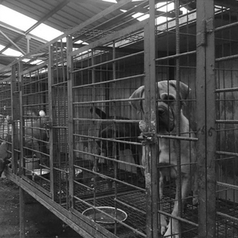
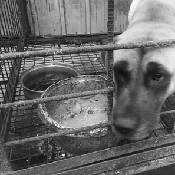
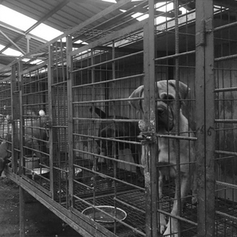
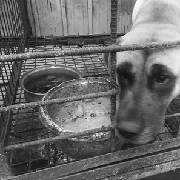
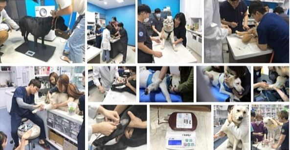

다른개를 살리기 위해 사는 공혈견...
개도 갑작스럽게 사고를 당하거나, 질병에 걸리면 수혈이 필요합니다.수혈이 필요한 개에게 피를 나눠주는 개를 '공혈견'이라 부릅니다.
현재 개 수혈의 90%를 공혈견이 맡고 있습니다.
하지만 평생 피를 뽑는 용도로만 살아야하는
공혈견에 대해 희생이 너무 크고
일부 공혈견 사육의 열학한 환경이 드러나며
공혈견에 대한 많은 문제가 제기되고 있습니다.
한번에 헌혈로 4마리의 생명을 살릴 수 있습니다.
반려견 보호자들의 자발적인 참여로 주기적으로 헌혈을 하는 개들을'헌혈견'이라고 합니다. 아직 우리나라는 많은 숫자는 아니지만
미국이나 영국, 캐나다 들의 나라에서는 헌혈견 문화가
보편화돼 있는데 국내 대형견은 10만 마리 정도로 추정되는데 대형견
3600마리정도가 1년에 한번만 헌혈하면
공혈견이 필요 없을 것으로 보고 있습니다.

헌혈견 조건
2~8살
25kg이상
매월 심장사상충, 구충예방을 한 반려견
과거 전염성 질환을 앓지 않아야함
출산후 1년 경과
경정맥채혈 및 사지채혈(병원마다 상이함)
채혈부위삭모
헌혈일 2주전부터 일체의 약복용 및 접종 금지
헌혈당일 8시간전 금식(물은 가능)
헌혈견 혜택
1. 헌혈을 통한 반려견 건강검진 무상지원
- 혈액형검사 (연계병원)- 심장사상충검사 (바이오노트)
- 진드기매개질병검사 (바이오노트)
- 기본혈액검사 (연계병원)
- 질병확인을 위한 심층혈액검사 (코리아벳렙)
-전염병 확인을 위한 PCR검사 (팝애니랩)